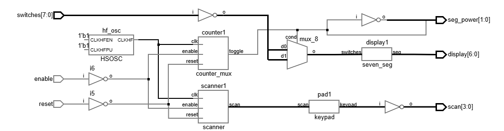
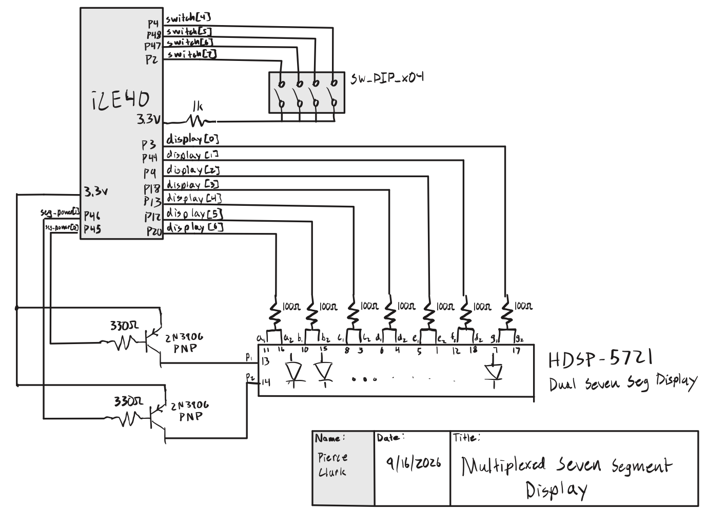
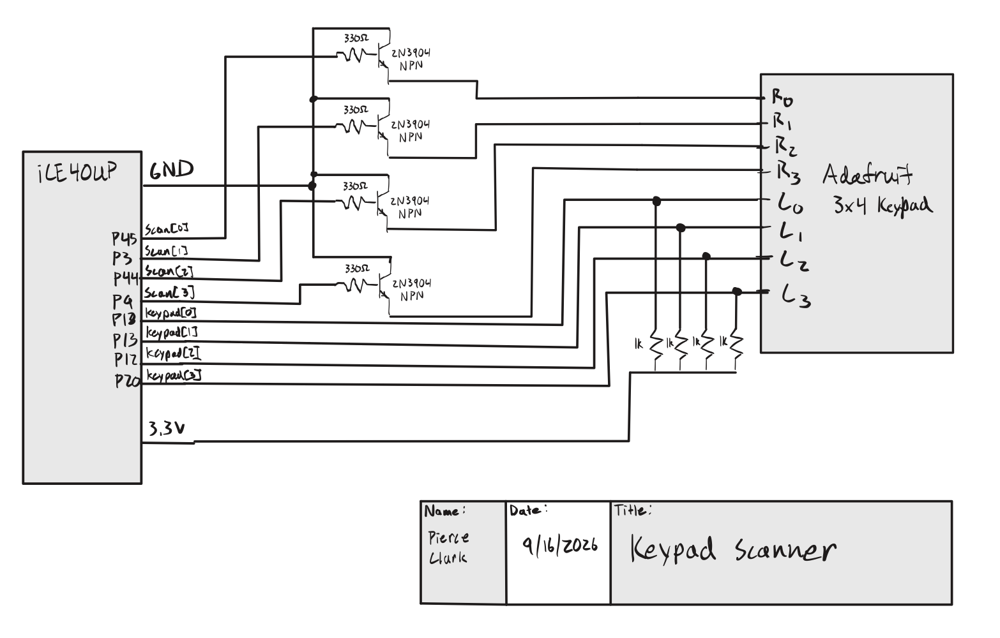
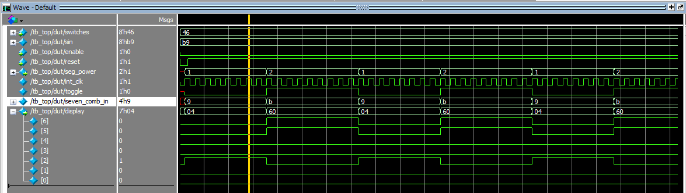
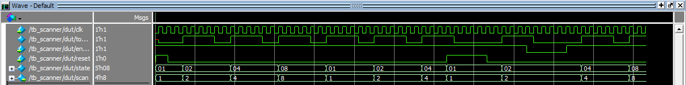

Lab 2: Multiplexed Seven Segment Display and Keypad Scanner
Introduction
In this lab, a design was implemented on the Lattice iCE40 UP5K to practice designing sequential circuits and use transistors. Two independent hexadecimal digits were displayed on a dual seven segment display using a single decoder module and time multiplexing. A scanning module driven at 8 Hz swept the keypad rows and read the columns, lighting on-board LEDs to indicate which keys were pressed.
Design and Testing Methodology
Time Multiplexed Display
The on-board high-speed oscillator (HSOSC) from the iCE40 UltraPlus primitive library was used to generate a clock signal at 48 MHz. A counter was used to divide the high frequency clock signal down to 100hz. That blinking frequency was used to toggle the power between the seven segment displays. The design was tested using an automatic test bench to demonstrate that the correct signal was passed when the display was flipped between digits.
Keypad Scanner
The on-board high-speed oscillator (HSOSC) from the iCE40 UltraPlus primitive library was used to generate a clock signal at 48 MHz. counter was used to divide the high frequency clock signal down to 8hz, and toggle a 4-state FSM such that each state was entered twice a second (2hz). The keypads output was read using inputs and then inverted due the active low behavior of the keypad.
Testing
Testbenches were written for the scanner and top level module to demonstrate that the state transitions happened correctly. The oscilliscope was also used to verify the circuitry performed as expected.
Technical Documentation
The source code for the project can be found in the associated Github repository.
Block Diagram
Show block diagram

The block diagram in Figure 1 shows the overall architecture of the design. The top level module includes 3 submodules which contain the HSOSC, counter with muxing logic, scanner module, and display logic.
Schematic
Show seven segment display schematic

Figure 2 shows the physical layout. The display is powered from 2 PNP transistors from the 3.3 V pin. The FPGA pins toggle between these power pins, and ground each segment to light it. 100 Ω resistors limit the seven-segment current, keeping both within the FPGA I/O and display ratings.
Show keypad scanner schematic

Figure 2 shows the physical layout. The display is powered from the 3.3 V pin, and the FPGA pins ground each segment to light it. 1 kΩ series resistors limit the on-board LED currents, and 150 Ω resistors limit the seven-segment current, keeping both within the FPGA I/O and display ratings.
Display Current and Segment Resistor Calculations
The display is an HDSP-5721, a two digit common anode seven segment display. Its datasheet has a typical forward voltage of \(V_F = 2.0\text{ V}\) per segment at 20 mA.
Each segment is in series between the anode and an FPGA pin, with a \(100\,\Omega\) series resistor. The segments are driven from 3.3 V through a 2N3906 PNP transistor. The equation for the circuit is \(V_{cc} = V_{EC(sat)} + V_F + I_F R\). Taking \(V_{BE(sat)} = 0.25\text{ V}\) for the 2N3906, \(V_F = 2.0\text{ V}\) leaves 1.05 V across the resistor:
\[ I_F = \frac{V_{cc} - V_{BE(sat)} - V_F}{R} = \frac{3.3 - 0.25 - 2.0}{100\,\Omega} = \frac{1.05\text{ V}}{100\,\Omega} = 10.5\text{ mA} \]
Because the two digits are time multiplexed, each segment is lit for half of each multiplexing period, so the average current per segment is \(I_{avg} = I_F / 2 = 5.25\text{ mA}\). This is under the max current rating of the anode.
PNP Anode Driver Calculations
Each common anode is switched by a 2N3906 PNP. The emitter is 3.3 V, the collector drives one digit. The base is driven by a \(330\,\Omega\) resistor from an FPGA pin.
If all seven segments are lit at once, the total current drawn is 73.5 mA, which is less than the maximum 200mA Continuous Collector Current.
\[ I_C = 7 \times 10.5\text{ mA} = 73.5\text{ mA} \]
With an emitter-base saturation voltage of \(V_{EB(sat)} = 0.8\text{ V}\), the base current is
\[ I_B = \frac{V_{cc} - V_{BE(sat)}}{R_B} = \frac{2.5\text{ V}}{330\,\Omega} = 7.6\text{ mA} \]
NPN Open Drain Keypad Driver Calculations
Each row is driven through a 2N3904 NPN. The emitter is grounded, the collector drives the row, and the base is driven through a \(470\,\Omega\) resistor from an FPGA pin.
With \(V_{OH} = 3.3\text{ V}\) and \(V_{BE(sat)} = 0.8\text{ V}\), the base current is
\[ I_B = \frac{V_{OH} - V_{BE(sat)}}{R_B} = \frac{2.5\text{ V}}{470\,\Omega} = 5.3\text{ mA} \]
Results and Discussion
Testbench Simulation
Show top level simulation

Figure 4 shows the QuestaSim results for the top level testbench. The display signals can be seen toggling between the switch inputs which confirms that the module functions as expected.
Show scanner simulation

Figure 5 shows the QuestaSim results for the keypad scanner testbench. The counter in the testbench was given a short cycle length so the full rotation is visible in simulation instead of taking the four seconds it would on the board at 2 Hz per bit.
Shortcomings
I fell short on the transistor calculations. I don’t totally understand how transistors work. I had to ask for help on what values to use.
Conclusion
This lab took approximately 15 hours.
Lab 2 AI Prototype
As part of this lab, an AI coding assistant was prompted twice to generate a time multiplexed seven segment display: once with no context, and once with the Lab 1 source files attached to the conversation. The model used was Claude Opus 5. Both conversations used the same wording apart from the sentence asking the model to reuse the attached files, and each was run in a fresh conversation so that nothing carried over between them.
Task 1: No Context
Show prompt and generated code
Prompt:
Write SystemVerilog HDL to time multiplex a single seven segment decoder (that decodes from four bits to a common anode seven segment display) to decode two sets of input bits and drive two sets of seven output bits.
Response:
A single decoder is shared by muxing its 4-bit input between the two digits and demuxing its 7-bit output back into two registers. A counter divides the input clock down to the refresh rate and toggles a sel bit; sel chooses which nibble is presented to the decoder and which output register captures the result. The decoder is active low, since a common anode display lights a segment when its cathode is pulled low, and the segment order is {g,f,e,d,c,b,a}. CLK_FREQ_HZ and REFRESH_HZ are parameters so the divider can be retargeted, and $clog2 sizes the counter automatically.
module time_mux_seven_seg #(
parameter int CLK_FREQ_HZ = 50_000_000, // input clock frequency
parameter int REFRESH_HZ = 500 // per-digit refresh rate
) (
input logic clk,
input logic rst_n,
input logic [3:0] digit0, // first set of input bits
input logic [3:0] digit1, // second set of input bits
output logic [6:0] seg0, // first set of seven output bits
output logic [6:0] seg1 // second set of seven output bits
);
localparam int DIVISOR = CLK_FREQ_HZ / (2 * REFRESH_HZ);
localparam int CNT_WIDTH = $clog2(DIVISOR);
logic [CNT_WIDTH-1:0] refresh_cnt;
logic sel; // 0 selects digit0, 1 selects digit1
logic [3:0] nibble; // shared decoder input
logic [6:0] seg; // shared decoder output
// Refresh clock divider: toggles sel at 2 * REFRESH_HZ
always_ff @(posedge clk or negedge rst_n) begin
if (!rst_n) begin
refresh_cnt <= '0;
sel <= 1'b0;
end else if (refresh_cnt == CNT_WIDTH'(DIVISOR - 1)) begin
refresh_cnt <= '0;
sel <= ~sel;
end else begin
refresh_cnt <= refresh_cnt + 1'b1;
end
end
// Input mux: a single decoder is shared by both digits
assign nibble = sel ? digit1 : digit0;
// The one and only seven segment decoder, active low, ordered {g,f,e,d,c,b,a}
always_comb begin
unique case (nibble)
4'h0: seg = 7'b1000000;
4'h1: seg = 7'b1111001;
4'h2: seg = 7'b0100100;
4'h3: seg = 7'b0110000;
4'h4: seg = 7'b0011001;
4'h5: seg = 7'b0010010;
4'h6: seg = 7'b0000010;
4'h7: seg = 7'b1111000;
4'h8: seg = 7'b0000000;
4'h9: seg = 7'b0010000;
4'hA: seg = 7'b0001000;
4'hB: seg = 7'b0000011;
4'hC: seg = 7'b1000110;
4'hD: seg = 7'b0100001;
4'hE: seg = 7'b0000110;
4'hF: seg = 7'b0001110;
default: seg = 7'b1111111;
endcase
end
// Output demux: latch the decoder result into the digit that was selected
always_ff @(posedge clk or negedge rst_n) begin
if (!rst_n) begin
seg0 <= 7'b1111111;
seg1 <= 7'b1111111;
end else if (sel) begin
seg1 <= seg;
end else begin
seg0 <= seg;
end
end
endmoduleRead on its own, the module does what the prompt asked. One decoder instance is shared, the mux and demux are driven by the same select bit, and the counter arithmetic is correct. What it does not do is target this board. With no context the model assumed a 50 MHz clock arriving on an external clk pin, and the UP5K board used in this lab has no such oscillator, so the design has no clock source until HSOSC is instantiated by hand. It also assumed an asynchronous active low rst_n, which does not match the push button the rest of the lab wires to a synchronous reset, and it invented its own {g,f,e,d,c,b,a} segment encoding, which is bit reversed relative to the seven_seg decoder written in Lab 1 and therefore relative to the pin assignments already in use.
Radiant results: TODO
Task 2: With Lab 1 Files Attached
Show prompt and generated code
Prompt: (with lab01_pc.sv, seven_seg.sv, and counter.sv attached)
Write SystemVerilog HDL to time multiplex a single seven segment decoder (that decodes from four bits to a common anode seven segment display) to decode two sets of input bits and drive two sets of seven output bits. Use the seven segment decoder and oscillator provided in the attached files.
Response:
The attached files already contain everything except the multiplexing, so this module is mostly structural. HSOSC is instantiated exactly as it is in lab01_pc.sv to get the 48 MHz internal clock, the existing counter is reused as the refresh divider, and a single seven_seg instance is shared between the two digits. Because counter drives its led output high for the upper half of the count, it already produces a 50% duty square wave that can be used directly as the select signal, so no extra toggle flop is needed. A maxcount of 240,000 at 48 MHz gives a 5 ms period, refreshing each digit at 200 Hz.
module seven_seg_mux(
input logic reset,
input logic [3:0] s0, // first set of input bits
input logic [3:0] s1, // second set of input bits
output logic [6:0] seg0, // first set of seven output bits
output logic [6:0] seg1 // second set of seven output bits
);
// 48 MHz internal oscillator, same instantiation as lab01_pc
logic int_osc;
HSOSC #(.CLKHF_DIV(2'b00))
hf_osc (.CLKHFPU(1'b1), .CLKHFEN(1'b1), .CLKHF(int_osc));
// Reuse the Lab 1 counter as the refresh divider. Its led output is high
// for the upper half of the count, so it is a 50% duty square wave.
// 240,000 counts at 48 MHz is a 5 ms period, i.e. each digit is refreshed
// at 200 Hz, which is well above the flicker threshold.
logic select;
counter #(32, 240000)
refresh (.clk(int_osc), .reset(!reset), .enable(1'b1), .led(select));
// Mux the two nibbles into the single shared decoder
logic [3:0] nibble;
assign nibble = select ? s1 : s0;
// One instance of the Lab 1 seven segment decoder for both digits
logic [6:0] seg;
seven_seg decoder (.switches(nibble), .seg(seg));
// Demux the decoder output back out to the two digits
always_ff @(posedge int_osc) begin
if (!reset) begin
seg0 <= 7'b1111111;
seg1 <= 7'b1111111;
end else if (select) seg1 <= seg;
else seg0 <= seg;
end
endmoduleWith the files attached the model stopped inventing infrastructure. It picked up the HSOSC instantiation verbatim, including the CLKHF_DIV(2'b00) setting that yields 48 MHz, and it sized the refresh counter against 48 MHz rather than against the 50 MHz it had guessed in Task 1. It reused counter and seven_seg by instantiation instead of rewriting them, so the segment encoding is the same active low {a,b,c,d,e,f,g} mapping the board is already wired for. It also noticed that counter’s led output is already a 50% duty square wave and used it directly as the select signal rather than adding a toggle flop, which is a property of the attached file that Task 1 had no way to know about. The one idiom it copied without adjusting is the reset: .reset(!reset) matches the call in lab01_pc.sv, but the always_ff block in the same module tests if (!reset), so the reset polarity is inconsistent between the counter and the output registers.
Radiant results: TODO
Both generated files are kept verbatim, as generated, in the Github repository under lab02/fpga/src/ai_prototype/.
Reflection
I did not have much time to do the AI prototyping, but the code from task 2 looks much more compact than the code in part 1, which may indicate a better understand of the prompt and better efficiency.